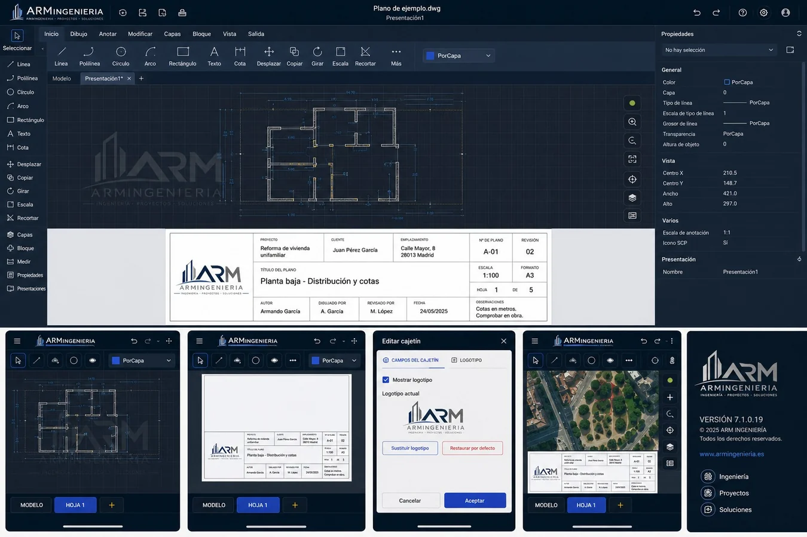

Desarrollo activo
ARM CAD
Entorno CAD 2D online orientado a documentación técnica y planos profesionales.
Aplicación webCuenta ARMBeta gratuita · registro
Accede a nuestras herramientas desde el navegador. ARM CAD, ARM HVAC DUCTS y ARM PV & BESS están integradas con tu cuenta ARM; ARM CableAPP es gratuita y no requiere registro.

Entorno CAD 2D online orientado a documentación técnica y planos profesionales.
Diseño, dimensionado y comprobación de redes de conductos de climatización, con documentación técnica profesional.
Diseña instalaciones fotovoltaicas, dimensiona baterías, analiza sombras y producción, configura strings y genera informes técnicos y económicos.
Calculadora web para dimensionar conductores eléctricos en corriente alterna y continua. Acceso directo, sin cuentas ni licencias.
ARM Platform crecerá con aplicaciones especializadas procedentes de problemas reales del sector. No publicamos prototipos incompletos como productos terminados.
En preparación. Se anunciará desde la plataforma cuando alcance su versión de publicación.
Arquitectura preparada para incorporar nuevas aplicaciones sin mezclar sus códigos.
Las necesidades detectadas por la comunidad ayudan a priorizar nuevos desarrollos.
¿Has detectado un error o algo que podríamos mejorar? Haz una captura de pantalla o graba un vídeo y escríbenos. ¡Tu opinión nos ayuda a mejorar!
Adjunta tus capturas o vídeos desde WhatsApp o tu aplicación de correo. Evita incluir contraseñas o datos personales de terceros.